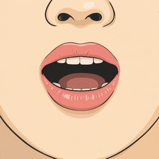
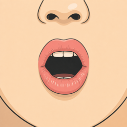
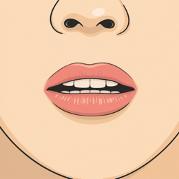

오늘의 목표 (今日のゴール)
짧고 단단한 소리를 배워요. 이 세 단어를 혼자 읽게 될 거예요.「短くて かたい音」を習います。この3つの単語を自分で読めるようになります。
지금까지의 자음 (ここまでの子音)
먼저 바람 없는 소리와 바람 있는 소리를 소리 내어 읽어 보세요.まず、息のない音と息のある音を声に出して読んでみましょう。




경음 (つまる音)
이번엔 획을 더하지 않아요. 같은 글자를 하나 더 써요. 새 글자는 다섯 개예요.今度は画を足しません。同じ文字をもう1つ書きます。新しい文字は5つです。
겹쳐 쓰기 (重ねて書く)
ㅂ 옆에 ㅂ을 하나 더 쓰면 ㅃ이 돼요. 소리도 더 단단해져요.ㅂ の隣に ㅂ をもう1つ書くと ㅃ になります。音ももっと かたく なります。
작은 っ 소리 (小さい「っ」の音)
이 소리, 일본어에도 있어요. 바람은 안 나오고, 짧게 끊어요.この音、日本語にもあります。息は出さず、短く切ります。
듣고 고르기 (聞いて選ぼう)
제가 읽을게요. 듣고 맞는 쪽을 눌러 보세요.私が読みます。聞いて、正しいほうをタップしてください。
ㄲ · ㄸ · ㅃ 읽기 (ㄲ・ㄸ・ㅃ を読もう)
이번엔 혼자 읽어 보세요. 바람 없이, 짧게 끊어서요.今度はひとりで読んでみましょう。息を出さず、短く切って。

작은 っ 소리 ② (小さい「っ」の音 ②)
ㅅ과 ㅈ도 똑같아요.ㅅ と ㅈ も同じです。
듣고 고르기 (聞いて選ぼう)
제가 읽을게요. 듣고 맞는 쪽을 눌러 보세요.私が読みます。聞いて、正しいほうをタップしてください。
ㅆ · ㅉ 읽기 (ㅆ・ㅉ を読もう)
이번에도 혼자 읽어 보세요. 짧게 끊어서요.今度もひとりで読んでみましょう。短く切って。
소리 세 개 (1つの席に、3つの音)
이제 한 자리에 소리가 세 개예요. 바람 없는 소리, 바람 센 소리, 겹쳐 쓴 소리.これで1つの席に音が3つ。息のない音、息の強い音、重ねた音です。
세 개 나란히 (3つならべて)
가타카나는 다 같은데 소리는 세 개예요. 손바닥을 입 앞에 대고 따라 해 보세요. 가운데만 바람이 손에 닿아요.カタカナは同じでも、音は3つです。手のひらを口の前に当てて、まねしてみましょう。真ん中だけ息が手に当たります。
듣고 고르기 (聞いて選ぼう)
이번엔 바람 센 소리와 겹쳐 쓴 소리예요. 제가 읽는 쪽을 잘 듣고 눌러 보세요.今度は息の強い音と、重ねた音です。私が読むほうをよく聞いて、タップしてください。
세 개씩 읽기 (3つずつ読もう)
한 줄에 세 개예요. 왼쪽부터 오른쪽까지 이어서 읽어 보세요.1行に3つです。左から右へ、続けて読んでみましょう。
조합표 (組み合わせ表)
새 부품은 하나도 없어요. 겹쳐 쓰기만 했는데 글자가 서른 개 늘었어요. 제가 한 줄씩 읽을게요.新しいパーツはゼロ。重ねて書いただけなのに、文字が30 増えました。私が1行ずつ読みます。
섞어 읽기 (まぜて読もう)
오늘 배운 다섯 개를 한 블록씩 읽어 보세요.今日習った5つを、1ブロックずつ読んでみましょう。
겹친 글자 찾기 (重なった文字さがし)
이번엔 색이 없어요. 자음을 겹쳐 쓴 글자를 모두 눌러 보세요.今度は色なし。子音を重ねて書いた文字を全部タップしてください。
듣고 고르기 (聞いて選ぼう)
마지막이에요. 잘 듣고 맞는 쪽을 눌러 보세요.最後です。よく聞いて正しいほうをタップしてください。
블록 만들기 (ブロックを作ろう)
위에 쓴 대로 자음과 모음을 눌러 보세요.上に書いたとおり、子音と母音をタップしてください。
단어 (単語)
겹쳐 쓴 소리까지 다 모였어요. 이제 진짜 단어를 읽어 보세요.重ねた音までそろいました。本物の単語を読んでみましょう。
단어 읽기 (単語を読もう)
아는 글자뿐이에요. 하나씩 읽어 보세요.知っている文字だけです。1つずつ読んでみましょう。
단어 찾기 (聞いてさがそう)
제가 단어를 두 개 말할게요. 하나씩 찾아서 눌러 보세요.私が単語を2つ言います。1つずつさがしてタップしてください。
듣고 만들기 (聞いて組み立てよう)
이번엔 제가 말만 할게요. 듣고 글자 세 개를 만들어 보세요.今度は私が言うだけ。聞いて文字を3つ作ってみましょう。
간판 읽기 (看板を読もう)
한국에 있다고 상상해 보세요. 간판을 소리 내어 읽어 보세요!韓国にいると想像してみてください。看板を声に出して読んでみましょう！